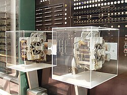

Computers have shaped the modern world, transforming how we communicate,
work, play, and accomplish tasks across nearly every area of life. From business to
education and entertainment to science, their impact is undeniable. These machines have
not
only increased our efficiency but also opened up entirely new possibilities that were
once unimaginable. Their influence stretches across every part of our daily
routines—from quick online searches and digital banking to virtual meetings and global
research collaboration. To truly appreciate the immense power and potential of
computers, it's essential to look back at their humble beginnings and explore the
remarkable journey of their evolution over time.
From ancient tools like the abacus to the sophisticated digital devices we rely
on today, the journey of computing technology has been long, rich, and
fascinating. The abacus, for example, served as one of humanity’s earliest
attempts at simplifying calculations, helping merchants and mathematicians
manage numbers with ease. As time passed, inventors and thinkers began to build
mechanical machines that could process information more efficiently. These early
computers, while basic by today’s standards, were revolutionary for their time
and laid the groundwork for the digital breakthroughs that would follow. Each
step in this timeline reflects society’s growing dependence on automation and
logic-driven tools to solve increasingly complex problems.
Today, computers and the internet grant us access to unlimited information and
the ability to connect with people around the world in real time. With just a
few clicks, we can attend virtual classes, video chat with friends overseas, or
stream high-definition content on demand. The digital age has brought about an
unprecedented level of accessibility and freedom, empowering individuals to
learn, create, and share ideas regardless of location. Whether you're a student
doing research or an entrepreneur running a global business, the modern internet
is a powerful tool. The image below provides a glimpse into the massive and
intricate web of connections that make up our global internet infrastructure, a
system that silently powers nearly every modern convenience we now take for
granted.
This video offers an overview of how computing has advanced through
history and how we arrived at the incredibly powerful tools we use today. It
takes you through some of the major milestones, from early mechanical inventions
to the rise of personal computers, and even touches on the rapid innovations
that
define the digital era we now live in. Watching this will not only give you a
better appreciation of the technology around you, but also spark curiosity about
what the future might hold as computers continue to evolve. Whether you're
tech-savvy or just curious about how it all started, this visual summary is a
great way to understand the progress we've made.
Ancient Computing Devices
There are several examples of ancient computing. The earlyiet known one is the summerian Abacus. which kept count of
items with stones on a wire. Another one is the Antikythera
mechanism which is thouht the be the works oldest geared computing device
Middle Ages Computing
The Middle Ages saw several attempts at computing devices. Ramon Llull devoted a large part
of his life to designing logical machines that, using undeniable truths, could produce
all possible knowledge. They were never built and are mostly a though experiment. His
work however influenced Gottfried Leibiniz, who built several calculating tools.
Charles Babbage and Ada Lovelace
the apex of early mechanical computing was the Difference Engine and Analytical Engine both
made by Charles Babbage.
Although neither was made, a team of engineers built a functioning Difference Engine
using only materials from the time. Babbage's devices could be reprogrammed with
input on punch cards. Ada
Lovelace wrote programs for these devices including one that calculated the
Bernoulli numbers.
Early 20th Century Mechanical Computing

In the early 1900s, mechanical calculators like the Comptometer and the Marchant calculator
were widely used in business and science. During the 1930s, Konrad Zuse built the
Z3 in Germany, considered the first programmable electromechanical
computer (1941). Around the same time, Howard Aiken and IBM developed the
Harvard Mark I, a room-sized calculator used for U.S. Navy computations
during World War II.
Alan Turing and Theoretical Computing
In 1936, British mathematician Alan
Turing published a paper introducing the concept of a Turing
machine, laying the foundation for theoretical computer science. During
WWII, Turing worked at Bletchley Park to help break the German Enigma
cipher, building machines like the Bombe, a pioneering code-breaking
device.
The Colossus
Built in 1943–44, the Colossus
was the world’s first programmable electronic digital computer. It was used by British
codebreakers to decipher German teleprinter messages encrypted with the Lorenz cipher.
Colossus significantly reduced the time required for decryption and remained secret for
decades after the war.
ENIAC and Electronic Computing
Developed at the University of Pennsylvania and completed in 1945, the ENIAC was the
first fully electronic general-purpose computer. Created by John Presper
Eckert and John Mauchly, it could solve a wide range
of numerical problems, especially for military applications like artillery trajectory
tables.
The Stored-Program Concept
In 1945, John von Neumann proposed the stored-program
architecture, which suggested that a computer’s program and data could
be stored in the same memory. This model, later called the von Neumann
architecture, became the standard for most computers. The first
implementation of this idea was the EDVAC, followed by machines like
EDSAC and Manchester Baby.
UNIVAC and Commercial Computing
In 1951, UNIVAC I
became the first commercial computer delivered in the United States. Also developed by
Eckert and Mauchly, it was used by government and business clients and famously
predicted the outcome of the 1952 U.S. presidential election live on television.
Integrated Circuits and the Microprocessor
In the late 1950s and 1960s, engineers like Jack Kilby and Robert
Noyce developed the integrated
circuit (IC), allowing many transistors to be placed on a
single chip. In 1971, Intel introduced the 4004, the
first commercial microprocessor, launching the era of general-purpose
computing on a single chip.
The Rise of Personal Computing
In 1975, the Altair
8800, often considered the first personal computer, was
released as a kit. It inspired Bill Gates and Paul
Allen to write a version of BASIC for it, founding
Microsoft. Soon after, Apple Computer was formed by
Steve Jobs and Steve Wozniak, leading to the 1977
release of the Apple II, one of the first highly successful personal
computers.
Graphical User Interfaces and the Mouse
The Xerox Alto (1973)
was the first computer with a graphical user interface (GUI), using
windows, icons, and a mouse. Though not commercially released, it influenced later
systems. In 1984, Apple introduced the Macintosh, bringing the GUI and
mouse to the mass market and changing how users interacted with computers.
The Internet and the World Wide Web
While the Internet originated in the 1960s as ARPANET, it
was the 1990 invention of the World Wide
Web by Tim Berners-Lee that made the
internet accessible to the public. By the mid-1990s, web browsers like
Netscape and Internet Explorer helped drive an
internet boom that reshaped global communication, commerce, and culture.
Mobile Computing and Smartphones
The 2000s saw computing become portable and personal. Laptops became
widespread, and in 2007, Apple released the first iPhone),
revolutionizing mobile computing. Smartphones combined computing power with connectivity
and sensors, leading to the rise of apps, location services, and cloud-based personal
assistants.
Cloud Computing and Big Data
With the rise of cloud
computing in the 2010s, services like Amazon Web
Services (AWS), Google Cloud, and Microsoft
Azure allowed data and software to be hosted remotely and accessed
globally. This enabled big data analytics, machine
learning, and scalable computing for businesses and developers.
Artificial Intelligence and Machine Learning
Advances in hardware and algorithms have led to a boom in artificial intelligence
(AI). Systems like IBM Watson,
AlphaGo, and most recently ChatGPT have demonstrated
the power of deep learning and large-scale neural networks. AI now powers everything
from voice assistants to real-time translation and medical diagnostics.
Significant People in Computer Science History
Ada Lovelace
Daguerreotype of Ada Lovelace
First Computer Programmer: Ada Lovelace, born in 1815, is recognized as the
first computer programmer. She collaborated with Charles Babbage on his proposed
Analytical Engine. Her notes included what is considered the first algorithm designed to
be carried out by a machine, and she envisioned computers doing much more than
calculations.
Alan Turing
Alan Turing in 1951
Father of Modern Computing: Alan Turing's work laid the foundation for
theoretical computer science and artificial intelligence. He developed the concept of
the Turing machine and played a critical role in breaking the Enigma code during WWII.
He also proposed the "Turing Test" to evaluate a machine's ability to exhibit
intelligent behavior.
Grace Hopper
Grace Hopper at UNIVAC Console
Inventor of the Compiler: Grace Hopper was a pioneering computer scientist
and U.S. Navy rear admiral. She created the first compiler, which paved the way for
high-level programming languages like COBOL. She helped popularize the concept of
machine-independent programming languages.
Tim Berners-Lee
Tim Berners-Lee in 2005
Inventor of the World Wide Web: Tim Berners-Lee created the World Wide Web
in 1989, enabling the internet to become a global information-sharing platform. He also
developed HTML, HTTP, and the first web browser. He continues to advocate for a free and
open web.
Donald Knuth
Knuth in 2011
Pioneer in Algorithms and Programming Theory: Donald Knuth is famous for his
deep work in algorithm analysis and for authoring The Art of Computer
Programming. He also created TeX, a typesetting system widely used in
scientific publishing.
Margaret Hamilton
Hamilton next to her Apollo 11 Software
Software Engineering Pioneer: Margaret Hamilton led the team that developed
the onboard flight software for NASA’s Apollo missions. Her work was critical to the
success of the moon landing. She also helped coin the term "software engineering" and
emphasized the importance of rigorous coding practices.
John von Neumann
Von Neumann's Los Alamos ID Badge
Architect of the Modern Computer: John von Neumann developed the
architecture underlying most modern computers, including the concept of stored programs.
His contributions spanned mathematics, physics, and computing, shaping the early
development of computer systems.
Dennis Ritchie
Ritchie in 2011
Creator of C and Co-developer of Unix: Dennis Ritchie created the C
programming language and co-developed the Unix operating system, both of which have had
lasting impacts on software development, operating systems, and modern computing
infrastructure.
Linus Torvalds
Torvalds in 2018
Creator of Linux: Linus Torvalds created the Linux kernel in 1991, which
grew into one of the most influential open-source projects. Linux now powers everything
from servers and smartphones to embedded systems. Torvalds also developed Git, a widely
used version control system.